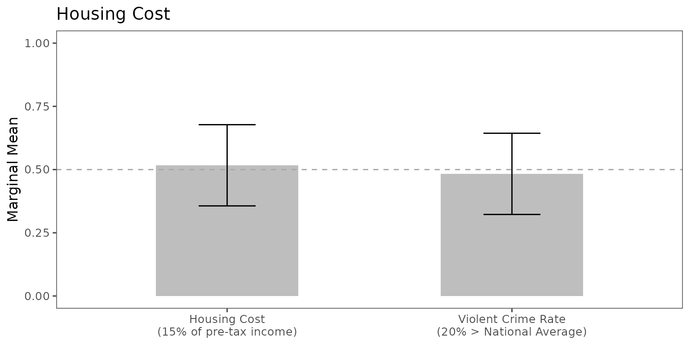
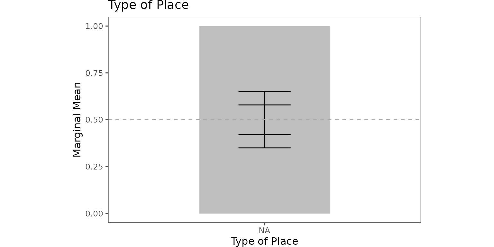
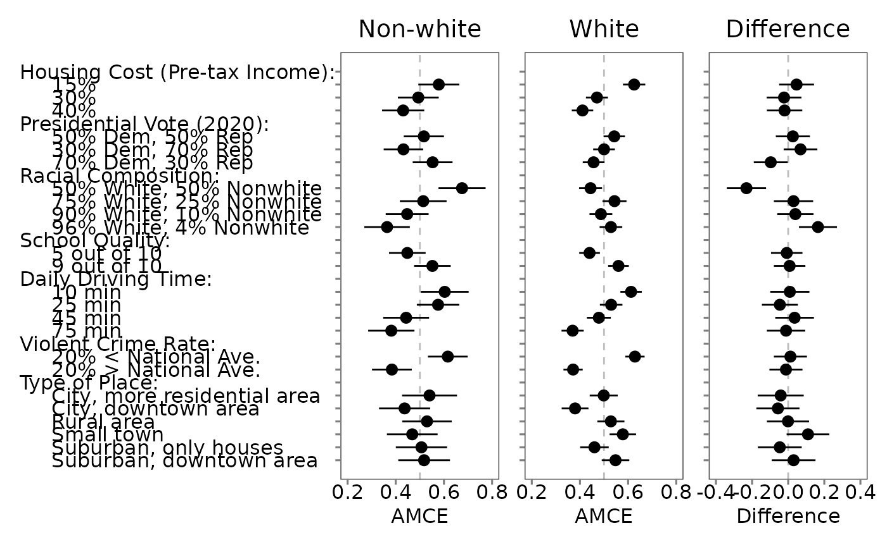

Explore and Compare Further
explore.Rmd🌟 Explore and Compare Further
Choice-level analysis opens the door to many new research questions that traditional profile-level analysis often overlooks. This article demonstrates how to estimate deeper quantities and compare subgroups effectively.
📦 Setup
We use the already wrangled and cleaned data
out1_arranged.
out1_arranged$labels## # A tibble: 24 × 4
## attribute level attribute_id level_id
## <chr> <chr> <chr> <chr>
## 1 Housing Cost 15% of pre-tax income att1 att1:leve…
## 2 Housing Cost 30% of pre-tax income att1 att1:leve…
## 3 Housing Cost 40% of pre-tax income att1 att1:leve…
## 4 Presidential Vote (2020) 50% Democrat, 50% Republican att2 att2:leve…
## 5 Presidential Vote (2020) 30% Democrat, 70% Republican att2 att2:leve…
## 6 Presidential Vote (2020) 70% Democrat, 30% Republican att2 att2:leve…
## 7 Racial Composition 50% White, 50% Nonwhite att3 att3:leve…
## 8 Racial Composition 75% White, 25% Nonwhite att3 att3:leve…
## 9 Racial Composition 90% White, 10% Nonwhite att3 att3:leve…
## 10 Racial Composition 96% White, 4% Nonwhite att3 att3:leve…
## # ℹ 14 more rows⚖️ Explore: Compare Trade-offs Directly
Example: Low Housing Costs vs. Low Crime Rates
qoi_1 <- set_qoi(
.structure = "choice_level",
.att_choose = "att1",
.lev_choose = "level1",
.att_notchoose = "att6",
.lev_notchoose = "level2"
)
mm1 <- projoint(.data = out1_arranged,
.qoi = qoi_1,
.structure = "choice_level",
.ignore_position = TRUE)
plot(mm1,
.labels = c("Housing Cost\n(15% of pre-tax income)",
"Violent Crime Rate\n(20% > National Average)")) +
labs(y = "Marginal Mean", x = NULL) +
coord_cartesian(ylim = c(0, 1)) +
geom_hline(yintercept = 0.5, linetype = "dashed", color = "darkgray")
🧩 Explore: Compare Multiple Levels Simultaneously
Example: Urban vs. Suburban Preferences
qoi_2 <- set_qoi(
.structure = "choice_level",
.att_choose = "att7",
.lev_choose = c("level2", "level3"),
.att_notchoose = "att7",
.lev_notchoose = c("level5", "level6")
)
mm2 <- projoint(.data = out1_arranged,
.qoi = qoi_2,
.structure = "choice_level",
.ignore_position = TRUE)
plot(mm2,
.labels = c("City", "Suburban")) +
labs(y = "Marginal Mean", x = "Type of Place") +
coord_cartesian(ylim = c(0, 1)) +
geom_hline(yintercept = 0.5, linetype = "dashed", color = "darkgray")
📊 Compare: Subgroup Differences
Profile-Level Subgroup Comparison: White vs. Non-White Respondents
outcomes <- c(paste0("choice", 1:8), "choice1_repeated_flipped")
df <- exampleData1 %>% mutate(white = ifelse(race == "White", 1, 0))
df_0 <- df %>% filter(white == 0) %>% reshape_projoint(outcomes)
df_1 <- df %>% filter(white == 1) %>% reshape_projoint(outcomes)
df_d <- df %>% reshape_projoint(outcomes, .covariates = "white")
data_file <- system.file("extdata", "labels_arranged.csv", package = "projoint")
if (data_file == "") stop("File not found!")
df_0 <- read_labels(df_0, data_file)
df_1 <- read_labels(df_1, data_file)
df_d <- read_labels(df_d, data_file)
out_0 <- projoint(df_0, .structure = "profile_level")
out_1 <- projoint(df_1, .structure = "profile_level")
out_d <- projoint(df_d, .structure = "profile_level", .by_var = "white")
plot_0 <- plot(out_0)
plot_1 <- plot(out_1)
plot_d <- plot(out_d, .by_var = TRUE)
plot_0 +
coord_cartesian(xlim = c(0.2, 0.8)) +
labs(title = "Non-white", x = "AMCE") +
theme(plot.title = element_text(hjust = 0.5)) +
plot_1 +
coord_cartesian(xlim = c(0.2, 0.8)) +
labs(title = "White", x = "AMCE") +
theme(axis.text.y = element_blank(), plot.title = element_text(hjust = 0.5)) +
plot_d +
coord_cartesian(xlim = c(-0.4, 0.4)) +
labs(title = "Difference", x = "Difference") +
theme(axis.text.y = element_blank(), plot.title = element_text(hjust = 0.5))
Choice-Level Subgroup Comparison: Party Differences
df_D <- exampleData1 %>% filter(party_1 == "Democrat") %>% reshape_projoint(outcomes)
df_R <- exampleData1 %>% filter(party_1 == "Republican") %>% reshape_projoint(outcomes)
df_0 <- exampleData1 %>% filter(party_1 %in% c("Something else", "Independent")) %>% reshape_projoint(outcomes)
qoi <- set_qoi(
.structure = "choice_level",
.estimand = "mm",
.att_choose = "att2",
.lev_choose = "level3",
.att_notchoose = "att2",
.lev_notchoose = "level1"
)
out_D <- projoint(df_D, qoi)
out_R <- projoint(df_R, qoi)
out_0 <- projoint(df_0, qoi)
out_merged <- bind_rows(
out_D$estimates %>% mutate(party = "Democrat"),
out_R$estimates %>% mutate(party = "Republican"),
out_0$estimates %>% mutate(party = "Independent")
) %>% filter(estimand == "mm_corrected")
# Plot
ggplot(out_merged, aes(y = party, x = estimate)) +
geom_vline(xintercept = 0.5, linetype = "dashed", color = "gray") +
geom_pointrange(aes(xmin = conf.low, xmax = conf.high)) +
geom_text(aes(label = format(round(estimate, 2), nsmall = 2)), vjust = -1) +
labs(y = NULL, x = "Choice-level Marginal Mean",
title = "Preference for Democratic-majority areas") +
theme_classic()
🌟 What’s Next?
Congratulations! You’ve completed the step-by-step tutorial for using
projoint.
You can now explore your own data, compare subgroups, and publish your
findings!
Unlock richer insights using projoint! 🚀
⬅️ Back to: Visualize Your
Results
🏠 Home: Home